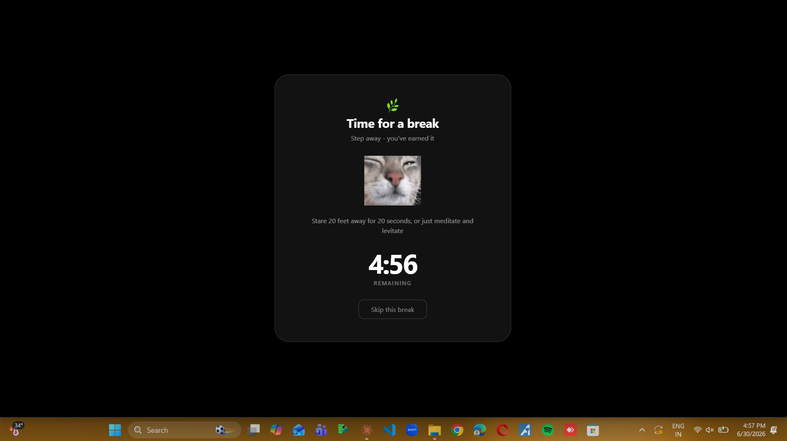

PAUSE
POP quietly dims your screen every 30 minutes and gives you a real reason to stop. Drink water, stretch, walk, or rest your eyes. Five minutes, then right back to it.
OBSERVE
Thirty seconds before each break, POP gives you a heads-up. Then the screen goes dark, a short activity appears, and a countdown keeps you honest.

Work interval from 5 to 120 minutes. Break length from 1 to 30. POP adapts to how you actually work.
Drink water, stretch, walk, or rest your eyes - chosen at random so breaks don't get stale.
No accounts, no cloud, no analytics. Your settings and break history stay on your computer, full stop.
No dock icon, no taskbar clutter. POP sits quietly in the system tray until it's actually time for a break.
PROCEED
No. Download POP-Setup.exe, run it, and you're done. The installer bundles everything POP needs - there's nothing else to set up.
Yes, and it's expected. This warning (SmartScreen) appears for any small installer that hasn't paid for a code-signing certificate - it's not a sign of a problem. Click More info, then Run anyway, and the install will continue normally.
No. POP doesn't have a server, doesn't require an account, and doesn't phone home. Your settings and break history are stored in a small local file on your own computer and nowhere else.
Right-click the POP icon in your system tray, choose Settings, and adjust the work interval or break duration. Changes save immediately.
Open Settings from the tray menu and toggle Start on login on. From then on, POP launches quietly in the background every time you sign in.
Click the small ^ arrow near your clock to show hidden tray icons - POP may be tucked in there. You can drag it out to keep it visible permanently.
Like any other Windows app: open Settings → Apps → Installed apps (or Control Panel → Programs), find POP, and uninstall. This removes the app and its local settings file.
Not yet - POP currently supports Windows 10 and 11 only. macOS and Linux support are on the roadmap.
Found a bug, or have a feature idea? I'd like to hear it.